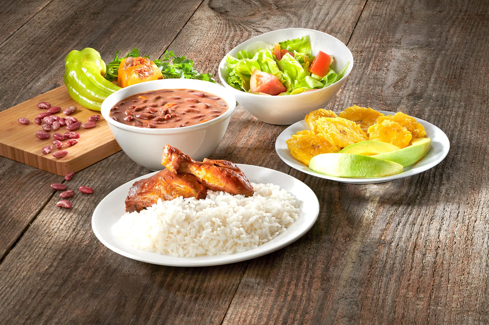

LA BANDERA DOMINICANA: NATIONAL TRADITIONAL LUNCH

One of the first things that most visitors to the Dominican Republic will learn about Dominican food is that La Bandera Dominicana, or “The Dominican Flag,” is also what Dominicans call the Dominican national dish served for lunch throughout the country.
General Information:
PREP TIME:
30 mins
COOK TIME:
1 hr 30 minutes
TOTAL TIME:
2 hrs
COURSE:
Lunch
CUISINE:
Dominican
SERVINGS:
4 servings
CALORIES:
1881 kcal
Ingredients:
Arroz Blanco
- 5 tablespoons vegetable oil
- 1¼ teaspoon salt
- 4 cups rice
Habichuelas Guisadas
- 2 cups dry beans, (pinto, cranberry, or red kidney beans)
- 1 tablespoon olive oil
- 1 oregano (dry, ground)
- 1 bell pepper, chopped
- 1 small red onion, cut into four quarters
- 2 cloves garlic, crushed
- 1 cup diced auyama (kabocha squash), (West Indies pumpkin)
- 1 cup tomato sauce
- leaves from a celery stalk, chopped (optional)
- 4 sprigs thyme, (optional)
- ½ teaspoon chopped fresh cilantro
- 1 teaspoon salt, (or more, to taste)
Pollo Guisado
- 2 lbs chicken, [0.9 kg] cut into small pieces
- 2 limes, cut into halves
- ¼ teaspoon oregano (dry, ground)
- 1 small red onion, chopped into fine strips or eighths
- ½ cup chopped celery, (optional)
- 1 teaspoon salt, (more may be necessary)
- ½ teaspoon mashed garlic
- 2 tablespoons vegetable oil, (corn, canola or peanut)
- 1 teaspoon sugar (white, granulated)
- 2 cups water
- 4 plum tomato, cut into quarters
- 2 green bell, or cubanela (cubanelle) peppers
- ¼ cup pitted green olives, cut into halves (optional)
- 1 cup tomato sauce
- Bunch fresh coriander leaves
- ¼ teaspoon pepper (freshly-cracked, or ground)
Ensalada Verde
- 2 tomato, diced or sliced
- ½ lettuce, (or ¼ cabbage chopped finely)
- 1 cucumber, sliced or diced
- 1 bell pepper, cut into thin strips
- 1 small red onion, cut into thin slices (optional)
- 1 beetroot, boiled and sliced (optional)
- 3 tablespoons fruit vinegar
- 3 tablespoons olive oil
- 1 teaspoon salt, (or more, to taste)
Instructions:
Arroz Blanco
- In a medium aluminum pot (Amazon affiliate link) (minimum 2.5 liters [0.5 gal] capacity) heat 3 tablespoons of oil over medium heat, add the salt. When the oil is a little hot add 6 cups [1.4 liters] of water, taking care not to splash.
If you use another type of pot, just combine oil, salt, and water and heat over medium heat.
- When the water reaches boiling point, add the rice and cook, stirring regularly to prevent it from sticking to the bottom.
- When the water has evaporated, cover with the lid and cook over very low heat (but enough to generate steam) for 15 minutes.
Remove the lid, stir, add the remaining oil and cover again. This oil will help the rice to shine, and the concón will be crispier.
In 5 more minutes taste the rice, it should be firm but soft inside. If necessary cover again and leave for another 5 minutes on low heat.
- As soon as the rice is ready, remove it from the pot and place it in a serving dish (this prevents the concón from getting soggy), and fluff it with a fork. Scrape off the concón (rice stuck to the bottom) and serve separately.
Habichuelas Guisadas
If you are using dry beans soak the beans overnight.
Remove the beans from the soaking water and boil in fresh water until they are very soft (may take up to an hour, or about 20 minutes in a pressure cooker.
- Separate the beans from the boiling water. Set both aside.
- In a sauce, pot, or caldero, heat the oil over medium-high heat. Add oregano, bell pepper, onion, garlic, auyama, tomato sauce, celery, thyme and cilantro. Cook and stir for half a minute.
Add the beans and simmer for two minutes.
- Pour in 4 cups of the water in which the beans boiled (complete with fresh water if necessary). Once it reaches a rolling boil, lightly mashed the beans with a potato masher to break them out of the skin and making creamier habichuelas.
Lower temperature to medium heat and cook until it reaches a creamy consistency. Season with salt to taste.
- Remove the chunks of onion, as well as any stray twigs or large bits of herbs if you used fresh herbs.
- Remove from the heat and serve.
Pollo Guisado
- Cut the chicken into small pieces and place it in a bowl that has a lid. Season the chicken pieces with lime juice.
- Mix the chicken, oregano, onion, celery, salt, and garlic. Marinate for 30 minutes.
- In a pot heat the oil over medium heat, add sugar, and wait until it browns.
Add the chicken (reserve all the other things in the marinade for use in a later step) and cook and stir until the meat is light brown.
- Add 2 tablespoons of water. Cover and simmer over medium heat for 15 minutes, stirring and adding water by the tablespoon as it becomes necessary to prevent it from burning.
- Stir in the vegetables that you had set aside from marinating the chicken, plus cubanelle pepper, tomatoes, and olives. Cover, and simmer until the vegetables are cooked through, adding water by the tablespoon and stirring as it becomes necessary.
- Add the tomato sauce and half a cup of water, and simmer over low heat to produce a light sauce. The vegetables will be very soft, the sauce is a bit thick, and the chicken fall-off-the-bone tender.
Add fresh cilantro. Season with salt and black pepper to taste.
- Serve
Ensalada Verde
- Sprinkle the sliced beet with a pinch of sugar. Arrange the vegetables on a platter, including the beetroot.
- Combine vinegar, and olive oil. Add salt to taste and stir to combine.
\
- Serve salad alongside the vinaigrette. If it will be served later, cover and keep in the fridge.